In the celebrated, controversial essays gathered here, Olu Oguibe exposes the disparities of the treatment afforded Western and non-Western artists. Ranging from the impact of the West’s appetite for difference on global cultural relations and the existence of a digital Third World to the African redefinition of modernity, Oguibe’s uncompromising criticism provides a global vision of contemporary art and culture.
whats the best videos games?
10: Super Mario 64 Released 1996
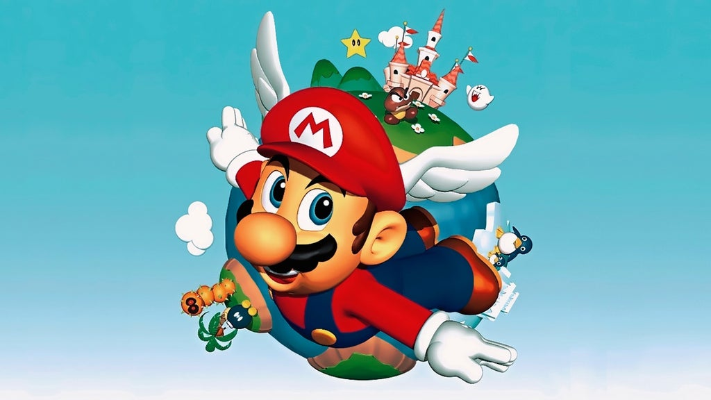Mario games are synonymous with fun and innovation, and perhaps Mario 64 is the best example of the latter.
It gathered the core elements of Mario’s best 2D, side-scrolling adventures and worked out how to translate
them into a groundbreaking 3D world. It was still recognisably Mario – he collected mushrooms and ran and
jumped his way to success, but he was forever changed. He could now long jump, triple jump, and backflip.
While the underlying challenge remained the same and the locations were reassuringly familiar, the shift in
perspective changed everything.
What’s even more impressive is that Mario did not simply enter a new dimension with ease, he did it with
style that few games unburdened with such technical challenges ever achieve. Mario 64 might now look a
little blocky but it remains bold and brilliant, too.
09 :Red Dead Redemption Released 2010
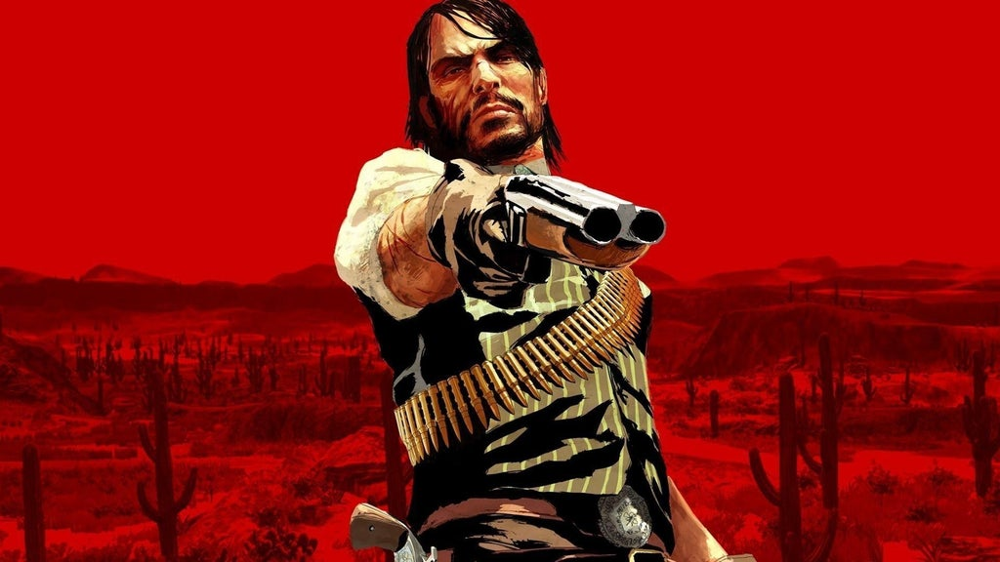 If you're reading this list and haven't played Red Dead Redemption, go find yourself a copy of the game and
the appropriate console to play it on. Right now. We'll wait the 30+ hours – this is important.
2008's GTA 4 may have been the reason that I bought an Xbox 360, but RDR is the reason I kept it. Not only
did I get completely lost in the massive single-player world, to the point where I'd started talking with a
bit of a drawl because I was so used to hearing it, but it also drew me into online gaming unlike anything
I'd played before. Sure, CoD was fun for a bit and racing games were okay, but never before had I so
successfully crafted my own stories and adventures (with friends and strangers alike) than in Red Dead's
Free Roam mode.
It was the kind of game you couldn't wait to discuss with your friends the next day. "Did you save that
woman on the train tracks?" "No, but I found this cabin that had, like, 1,000 cougars in it," "That's cool,
but did you kill Sasquatch?" Everyone had their own amazing tales to tell about their time in the old west,
and you were constantly making new ones every time you turned it on. The only real downside to Red Dead is
that it never came out on PC – which is mostly sad because my 360 died years ago and I really want to play
it again.
08 :Half-Life 2 Released 2004
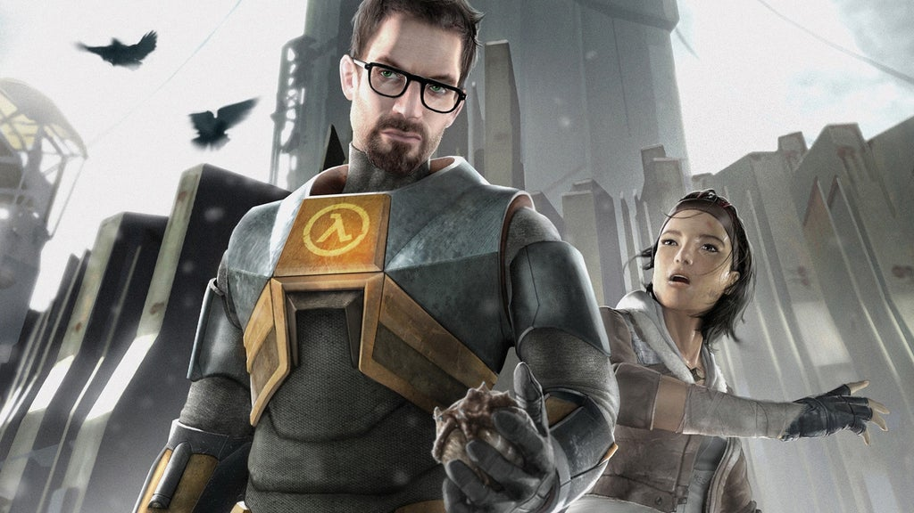Half-Life 2 forever changed our expectations for what a first-person shooter could be. Its richly imagined
world and wonderfully paced gameplay is a delight, never letting up and brimming with invention. The Gravity
Gun is obviously the poster child of Half-Life 2, turning each environment into a tactile playground in
which you can create improvised weapons and solve basic but clever physics puzzles - and its importance
can’t be overstated - but there’s an awful lot more here.
We’re introduced to Alyx Vance, a supporting character with a rare warmth and intelligence. We’re
transported to an iconic city, where Combine barricades loom with grim authority, and Striders stalk the
streets with an otherworldly menace. We get to set Antlions on our enemies and in which we play fetch with a
robot Dog. In short, it is a truly memorable piece of game design.
07: Tetris Released 1984
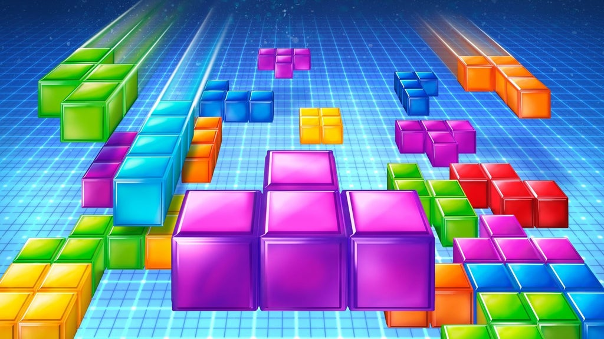The classic Russian title-matching puzzle game by Alexey Pajitnov blew my mind way back in the day. Even as a
little girl, I was obsessed with Tetris. I’d never played a video game that mentally stimulating, let alone
that addictive.
I still remember spending hours sitting in front of the TV with the Nintendo Entertainment System sitting at
my feet, rotating brightly colored puzzle pieces as they fell from the abyss, attempting to arrange them
into horizontal lines that when assembled correctly would disappear and cause me to advance to the next
stage. It was crazy fun, even when blocks began to fall at an alarmingly fast pace and I fell into a
frenzied panic. (I still remember how frustrated I’d get making careless mistakes that resulted in giant,
pixelated Towers of Pisa.)
But no matter how many times I had to start the game over, it was just too much fun to stop. There was
always the chance that this time I’d get the right puzzle piece at the right time and could move on to the
next stage. I never got tired of it, and even now Tetris remains one of my favorite games of all time.
06 :Super Mario Bros. 3 Released 1998
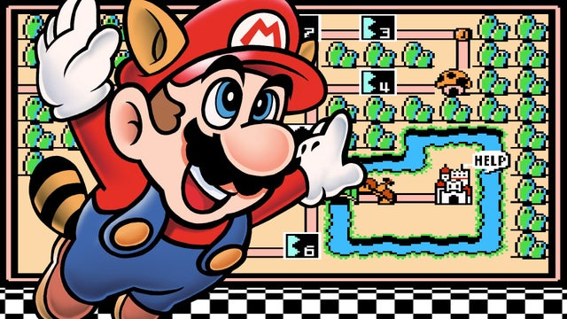As a kid, I played almost any game that had a cool character on the box or starred my beloved Ninja Turtles.
But even then, although I lacked the vocabulary to explain it, I knew that Super Mario Bros. was special,
and better than almost everything else. So when I received Super Mario Bros. 3 from Santa one year, and saw
on the back of the box that Mario could fly, I knew I was in for something special.
The game exceeded my every hope and wish for it, and I spent hundreds of blissful afternoons defeating Koopa
Kids, rescuing kings, and discovering secrets strewn throughout Mushroom World. Mario 3 earned a place on my
list of favorite games way back in 1990, and 25 years of gaming progress have yet to dislodge it.
Super Mario Bros. 3 is a textbook example of how to make a perfect video game sequel. It’s a mixture of the
original’s best elements, combined with an almost excessive amount of imaginative new ideas. So much of what
we consider so quintessentially Mario – the suits, the boos, the overworld – all actually originated
here.
05 The Legend of Zelda: Breath of the Wild Released 2017
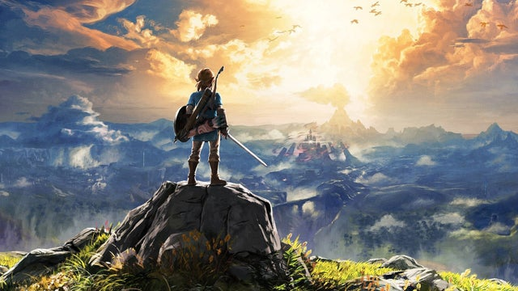The Legend of Zelda: Breath of the Wild eschewed the semi-linear, borderline predictable path of the 3D Zelda
games before it in favor of a bold, crazy new approach: let players do what they want, how they want, and in
whatever order they decide.
By marrying an open-ended approach to quest structure with the ability to freely explore a vast, beautiful,
intriguing world with little specific regulation, the 3D Zelda game template was shattered about as fast as
the average breakable weapon in Breath of the Wild. The result is a gorgeous, freeing open-world
action/adventure experience that evokes the wonder and fear of exploring a bold new place with the
empowering tangibility of becoming its hero.
04: Super Metroid Released 1994
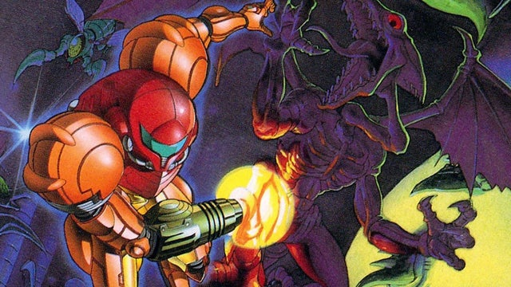Super Metroid’s minimalistic environmental storytelling set a bar, way back in 1994, that I believe has still
yet to be eclipsed. The planet Zebes is atmospheric, oppressive, and extremely lethal. At first glance,
there doesn’t even appear to be any story. But then you start to look more closely. The parasite-riddled
dead soldier outside of an early boss room. The crashed, half-submerged alien spaceship that may or may not
be haunted. The techno lair of the space pirates hiding under your nose the entire game. It’s brilliant and
confident. It doesn’t explain to you what each new area is all about. It’s all there, for you to figure out
(or ignore) on your own.
But it’s Super Metroid’s ability to consistently invite the player to be curious – and then rewarding that
curiosity – that makes it one of the greatest video games ever made. It’s not just that there are secrets
hidden everywhere (although there are, and it’s awesome) – it’s that the game teases you with tantalizing
clues – items, always just out of reach. An energy tank embedded in a seemingly impassable wall. A pair of
missiles only obtainable from the collapsing blocks above, leaving you no idea of how to get up there, just
with the knowledge that you can get up there.
Super Metroid is an impeccable action-platformer – that’s the “easy” part. What makes it truly special is
its genius combination of puzzle-solving, atmosphere, storytelling, exploration, game design, and gameplay.
There’s nothing else like
03 :Portal 2 Released 2011
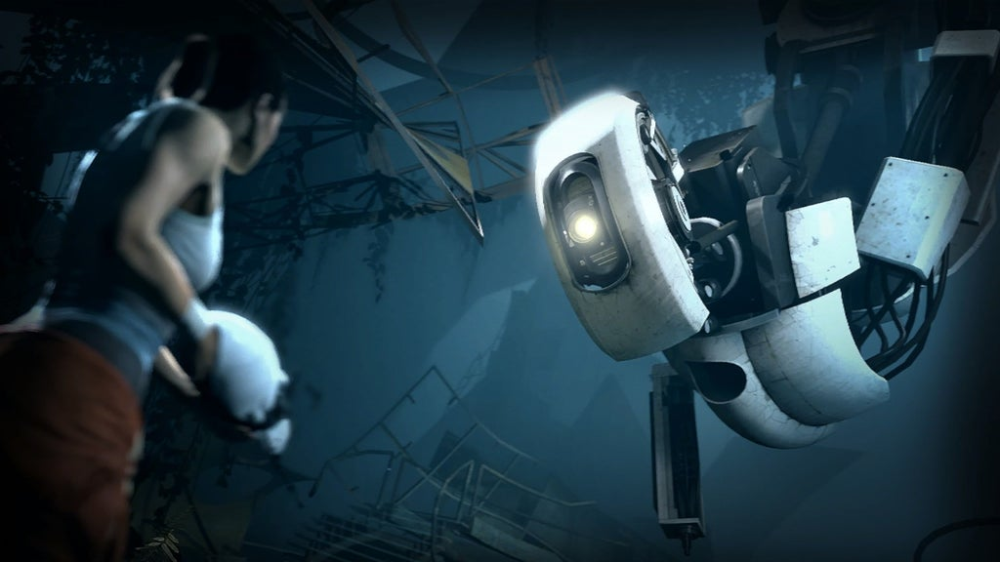Portal undoubtedly came out of nowhere and shattered the mold, but Portal 2 took that raw and incredible
concept and managed to shape it into a more polished and impressive package. It cranked the dials up on just
about everything that made the original so special. The mind-bending puzzles, the surprisingly dark story,
and the ridiculous humor that balanced it out - each piece of that picture was refined and refreshed to
build a sequel that actually surpassed the ambition of an already extremely ambitious game, making something
both familiar and altogether new.
It gave us a deeper look into the wonderful world of Aperture Science without completely dragging all of its
mysteries out into the light. It also mixed its “thinking with portals” puzzles up even further by weaving
in gel mechanics that felt entirely fresh and completely natural at the same time - while simultaneously and
subtly using them to tie gameplay mechanics into the story, patiently waiting until its incredible finale to
pay off those setups with one of the weirdest and most spectacular video game endings around. Couple that
with a seriously good co-op campaign and even a full-on custom level builder and sharing systems added
post-launch and Portal 2 has stayed the high bar by which all first-person puzzle games should be measured,
even nearly a decade later.
02: The Legend of Zelda: A Link to the Past Released 1991

The Legend of Zelda and The Adventure of Link laid the foundations Link’s quest, but it was A Link to the
Past that built the land of Hyrule into a world. From it’s unforgettable beginnings guiding a swordless Link
through the rain, to the final showdown with Ganon and utilizing mastery of sword and bow to defeat evil,
Link to the Past measured out a perfect pace of dungeons, exploration, and a gripping narrative that was
almost unheard of at the time. It’s open landscape was always inviting but never felt aimless – striking the
perfect balance of freedom and purpose in your quest to save Princess Zelda.
This iteration of Hyrule was more than just moving between enemy-filled screens, it encompassed everything
an immersive experience should be: a vast open world that teased you with secrets hiding just beyond your
reach, begging you to come back with new and inventive tools. Each zone – whether in the cheerful overworld,
dimly lit caves, or the intimidating Dark World – was brought to life through a culmination of details like
the sound of the Tempered Sword cleaving the air, the catchy jingle of a puzzle well-solved, and the ambient
tunes of Koji Kondo’s score. This version of Hyrule more than any other before or since, is the one I fell
most in love with.
01 :Super Mario World Released 1990

In nearly three decades no game has supplanted Super Mario World as the best game ever made... Which is stupid. I’ll get to that in a bit. Super Mario World is a relatively simple game to describe. It’s a Super Mario game, and we all know what that means: Mushrooms; perfect running and jumping action; and a giant world to explore, crammed with secrets. But what sets Super Mario World apart from other 2D Mario games is its irresistible complexity. Subsequent Super Mario games, like the New Super Mario Bros. series, simplified the overworld, trading Super Mario World’s cool hidden paths for linear tracks, largely abandoned the skies and treetops of Super Mario World’s vertical levels for ground-based obstacle courses, and did away with flying almost entirely (capes rule, helicopter hats drool!). Super Mario World is the crescendo to the slow build in technology and game design that started with Super Mario Bros. And that crescendo featured a cool, simulated 90s slap bass track. So look, we want to play a better game than Super Mario World. There’s no great, existential reason for Super Mario World to remain at the top of IGN’s list. Let Super Mario World’s placement on this list be a challenge to future game developers. We dare you to make a better game: Puzzling, but not opaque; tough but not intimidating; beautiful, funny, joyful, and universally recognizable. And, while we have your attention, dinosaurs are always a plus.
who is the 10 best gamers in the world
10. Peter “ppd” Dager
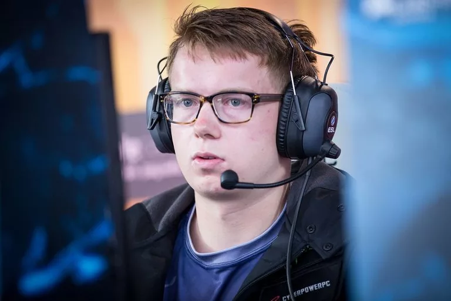top earning gamers Landing on the tenth spot is American player Peter “ppd” Dager, who first began his esports career at Heroes of Newerth. In his transition to Dota 2, Dager initially played with a few unpopular teams alongside Swedish player Ludwig “zai” Wahlberg. Despite his infamy for being “salty” in the industry, Dager has proven his worth multiple times as a master tactician and innovative drafter, paving way for the success of latter prominent teams he would be part of, such as Evil Geniuses. Dager’s earnings are currently sitting at $2,880,266.36, with its largest chunk coming from EG’s five-streak championships at World E-sport Championships 2014, StarLadder Series Season 10, Dota 2 Asia Championships 2015, Dota Pit League Season 3, and The International 2015. He is currently playing for Ninjas in Pyjamas.
9. Saahil “UNiVeRsE” Arora
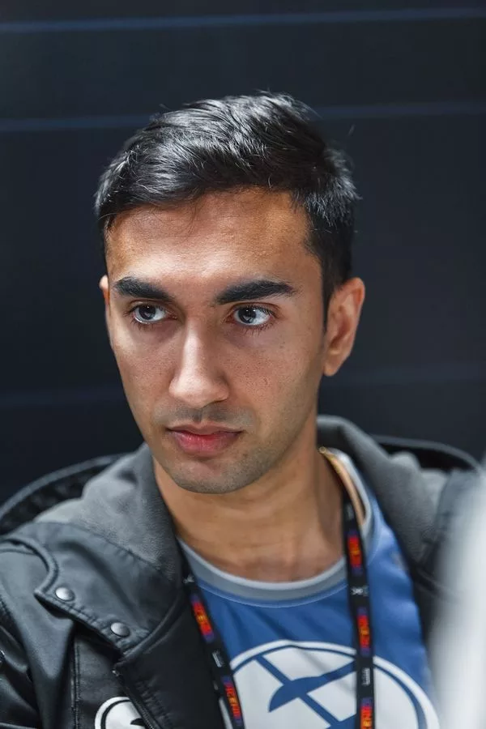top earning gamers Occupying the ninth spot is American player Saahil “UNiVeRsE” Arora, who is dubbed as a seasoned veteran in the Dota 2 community. Playing since 2011, Arora has already been with different teams such as Online Kingdom, It’s Gosu, Quantic, and Dignitas. He is widely acclaimed for his stint at Evil Geniuses and Team Secret. Arora is famous for playing offlane with his signature Heroes Faceless Void and Dark Seer. His so-called “six million dollar Echo Slam” with Earthshaker during The International 2015 is considered one of the greatest plays in Dota 2 history. Arora’s earnings are currently sitting at $3,027,735.67, primarily due to EG’s championship streak at StarLadder Series Season 10, Dota 2 Asia Championships 2015, Dota Pit League Season 3, and The International 2015. He currently plays for Fnatic after relocating in Malaysia.
8. Maroun “GH” Merhej
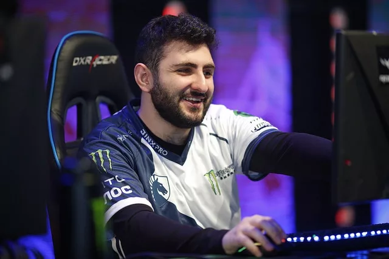top earning gamers Settling on the eighth spot is Lebanese player Maroun “GH” Merhej, who was once considered to only be a pubstar before he reached success. After reaching above 9k MMR in the Dota 2 leaderboards in Europe, Merhej was able to enter the professional scene when he served as a stand-in support player for Team Liquid at DreamLeague Season 6—where they also became champions. Since then, Merhej has been part of Team Liquid which will bag different major championships such as StarLadder i-League StarSeries Season 3, EPICENTER 2017, The International 2017, StarLadder i-League Invitational Season 3, AMD Sapphire Dota PIT League, StarLadder i-League Invitational Season 3, and the China Dota 2 Supermajor. Merhej is famous for playmaker support Heroes such as Earthshaker and Earth Spirit. "His earnings are currently sitting at 3,056,909.18.
7. Sumail “SumaiL” Hassan
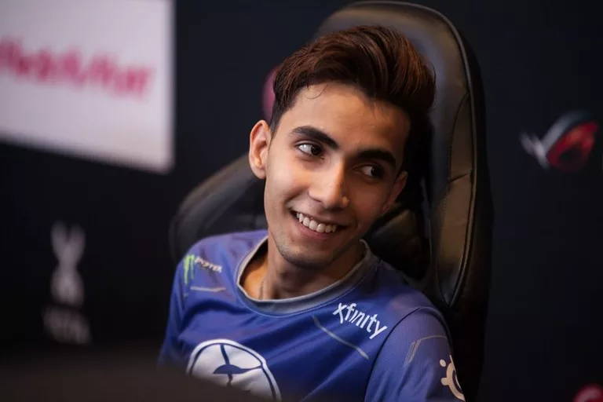top earning gamers On the seventh spot is Pakistani player Sumail “SumaiL” Hassan. Ever since his membership at Evil Geniuses since 2015, Hassan has carved a niche in the professional scene already despite being the team’s youngest player. Hassan’s fame in Dota 2 began with his Eul’s Scepter of Divinity build on Shadow Fiend mid during the Dota 2 Asia Championships 2015, influencing the metagame with his build at the time. His breakout in the tournament is through his Storm Spirit, which carried EG to victory despite having a bad 0-3 start. Since then, Hassan is considered one of the most prominent mid players in Dota 2, despite being outspoken on social media regarding issues in the esports world. His earnings are currently sitting at $3,265,914.94.
6. Jesse “JerAx” Vainikka
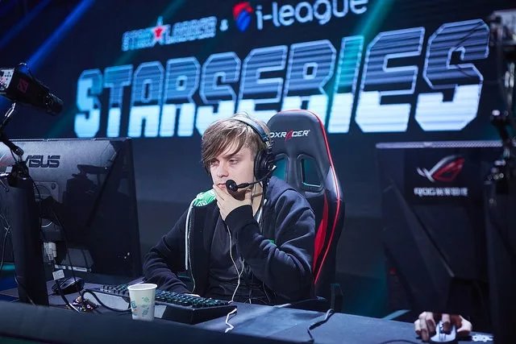top earning gamers Lodging on the sixth spot is Finnish player Jesse “JerAx” Vainikka. Vainikka’s humble beginnings as a support player can be traced from his inclusion at different teams such as Rat in the Dark, QPAD Red Pandas, 4 Anchors + Sea Captain, Team Tinker, MVP HOT6ix, and 5Jungz. Vainikka’s greatest performances are with his membership at Team Liquid in 2016, which carried on even in his transfer at OG after that year’s The International. Some of his best Heroes are Earth Spirit, Rubick, and Io. With championships such as the EPICENTER 2016, The Boston Major 2016, The Kiev Major 2017, MDL Macau Major, and The International 2018 under his belt, Vainikka’s earnings are currently sitting at $3,306,463.82.
5. Lasse “MATUMBAMAN” Urpalainen
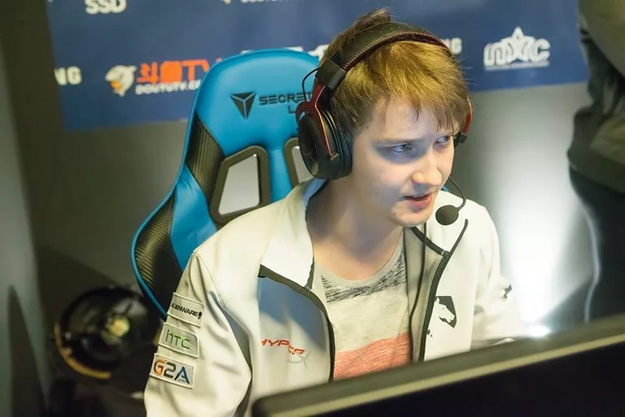top earning gamers On the fifth spot is Finnish player Lasse “MATUMBAMAN” Urpalainen. Urpalainen rose to fame when he won the Assembly Summer 2014 with his team Veni, Vidi, Vici. As a “new” player during the time, his surprisingly high mechanical skills caught the attention of Dota 2 enthusiasts. Urpalainen’s invitation at 5Jungz, which soon became Team Liquid, paved way for his outstanding career in esports, where he holds championships at EPICENTER 2016, StarLadder i-League StarSeries Season 3, EPICENTER 2017, The International 2017, and the China Dota 2 Supermajor. Known for his Broodmother, Visage, Lone Druid, and Lycan, Urpalainen’s earnings are currently sitting at $3,438,116.04.
4. Ivan “MinD_ContRoL” Ivanov
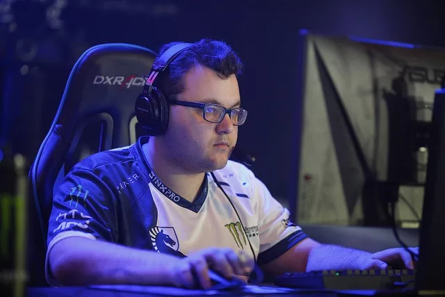top earning gamers Settling on the fourth spot is Bulgarian player Ivan “MinD_ContRoL” Ivanov. For the longest time, Ivanov has been a free agent because of his tendencies to have a new roster with his team, Basically Unknown, every once in a while. He also tried his luck out with teams like Oslik Gaming and Burden United. Upon his invitation at Team Liquid, Ivanov has finally settled and found his place in the world of Dota 2, bagging the championships at EPICENTER 2016, StarLadder i-League StarSeries Season 3, EPICENTER 2017, The International 2017, and the China Dota 2 Supermajor. One of Ivanov’s notable performances in his esports career is his playmaker Nature’s Prophet during The International 2017. His earnings are currently sitting at $3,438,411.76.
3. Amer “Miracle-“ Al-Barqawi
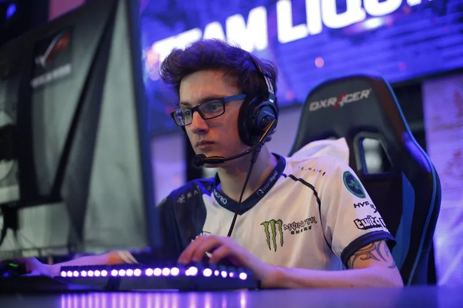top earning gamers Occupying the third spot is Polish-Jordanian player Amer “Miracle-“ Al-Barqawi, who gained critical attention after toppling Romanian player Aliwi “w33” Omar from the Dota 2 European leaderboards. After reaching the top, Al-Barqawi was recruited at (monkey) Business, now OG, which served as a springboard for his rise to fame. A prodigy of sorts, Al-Barqawi garnered a massive following for his high-level performances as a mid and safelane player for OG. This boosted even more when he became the first player in the world to reach 9k MMR. Despite transferring to Team Liquid after The International 2016, Al-Barqawi maintained winning tournaments. He currently has seven championships under his belt: The Frankfurt Major 2015, The Manila Major 2016, ESL One Frankfurt 2016 (OG); StarLadder i-League StarSeries Season 3, EPICENTER 2017, The International 2017, and China Dota 2 Supermajor (Team Liquid). His earnings are currently sitting at $3,671,337.28.
2. Johan “n0tail” Sundstein
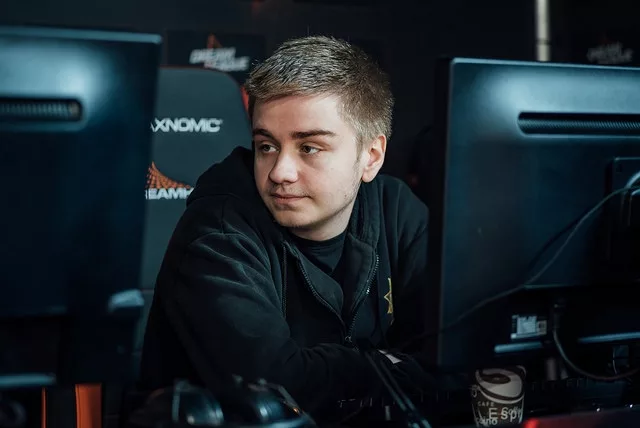top earning gamers Landing on the second spot is Danish player Johan “n0tail” Sundstein, who has long been in the esports scene since his Heroes of Newerth days. He made a name for himself in several HoN online tournaments, under team Fnatic. He also won consecutive LAN tournaments such as the DreamHack. In his transition to Dota 2, along with Fnatic teammates such as Tal “Fly” Aizik and Adrian “Era” Kryeziu, Sundstein was able to be part of upper seed teams in tournaments, albeit not winning championships. Sundstein joined Team Secret in 2014, which won the XMG Captains Draft 2.0. He then soon founded OG, formerly (monkey) Business, in 2015, the first Dota 2 team to ever hold four Major titles: Frankfurt, Manila, Boston, and Kiev. OG was incapable to participate in the China Dota 2 Supermajor due to Aizik’s and Gustav “s4” Magnusson’s sudden departure, leaving the team only a few weeks’ time to prepare for The International 2018 Open Qualifiers (the “most bottom” of the tournament). However, they still managed to emerge as champions after a rough 3-2 finish vs. PSD-LGD mainly through “comeback” games. As a result, Sundstein’s earnings are currently sitting at $3,733,970.56.
1. Kuro “KuroKy” Takhasomi
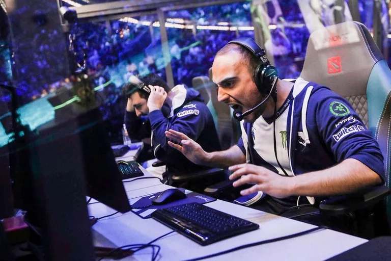top earning gamersGerman player Kuro “KuroKy” Takhasomi still wears the crown for being the highest earning gamer in the world, as of 2018, with a whopping total winnings of $4,097,926.95. Since Defense of the Ancients, or the so-called Dota 1, Takhasomi was already playing competitively under mousesports in 2008. At one event, he met Estonian player Clement “Puppey” Ivanov, who will be greatly influential in his esports career. During the Dota 2 adaptation, Takhasomi’s early days were not much successful with teams such as GosuGamers.net, PANZER, and 10,000th. He soon settled with Natus Vincere in 2013, alongside legendary players such as Oleksandr “XBOCT” Dashkevych, Gleb “Funn1k” Lipatnikov, Danil “Dendi” Ishutin, and Ivanov, landing second place at The International that year in a tooth and nail five-game series against Alliance. He continued seeking greener pastures at Team Secret in 2014 as the carry, but was only partly successful by winning second at the Star Ladder despite his stellar performances. After some roster changes, he went back to playing support and paved way for the team to win some LAN tournaments, but was still unsuccessful after a terrible performance at The International 2015. Takhasomi then founded 5Jungz, now Team Liquid, which bagged multiple championships such as the EPICENTER 2016, StarLadder i-League SarSeries Season 3, EPICENTER 2017, The International 2017, and the China Dota 2 Supermajor. He is the first professional Dota 2 player to win 1000 games and play 107 different Heroes in his esports career. With this list, Dota 2 has taken the charts by storm. On the Top 100 highest overall earnings list provided by e-Sports Earnings, 77 are Dota 2 players. The Top 50 are also dominated by them. Counter Strike: Global Offensive managed to register only 16 players. The number of representatives from other games are measly: League of Legends (four), Call of Duty: Infinite Warfare (two), and StarCraft II (one).